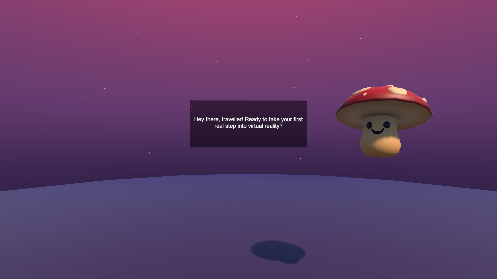
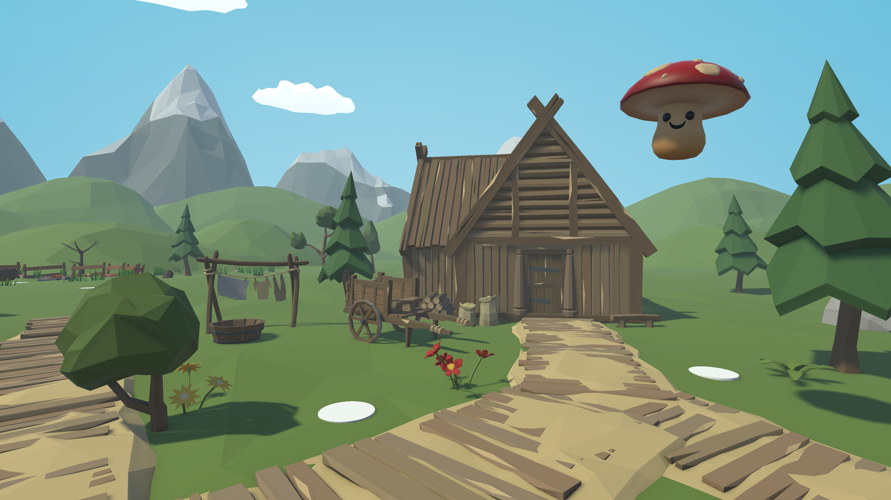

Getting Your VR Legs
Comfort-first onboarding for gamers new to virtual
reality.
40% — 70% of VR users experience VR sickness within just 15 minutes. With little support from current
onboarding
systems, many quit after just one bad gaming session.
This project explores how guided, comfort-aware onboarding can
reduce
disorientation and help users build confidence in VR.
The final
prototype rethinks the first steps into Virtual Reality.
This project was developed as a capstone for the HCI/d Master's program at Indiana University
Bloomington and reflects a synthesis of interaction design, human-centered research, and
experiential prototyping.
The Problem
VR sickness happens when what you see doesn't match what your body feels.
There's a clash between
visual, balance, and
motion signals. For most users, that mismatch often leads to disorientation, nausea and other related
symptoms.
What's in Scope, What's Out?
I focused on interaction and content pacing in virtual reality.
These are areas
where design choices have the most immediate impact on user comfort, especially for beginners and new
VR
gamers.
I didn't address hardware limitations, individual physiological
differences,
or experimental lab
setups. While these
matter, this project frames VR sickness as a design problem, not just a technical one.
Defining the Design Concept
I designed for continuity, not just for features.
Unlike traditional games, where tutorials can be
compartmentalized, VR is
continuous,
meaning every sound, motion, and delay contributes to a user's sense of presence. Simply
introducing comfort settings or movement styles one at a time wasn't enough.
Users needed a
cohesive experience where interaction, pacing, and emotional tone worked together. I framed my
solution as a narrative-led interaction.
Early Prototyping & Concept Evaluations
Bodystorming and prototype testing revealed the need for flexible pacing.
I started with bodystorming sessions to simulate key VR
moments: entering scenes, movement prompts, decisions in
unfamiliar spaces. Participants acted out interactions, revealing hesitation during transitions. This
informed narrative
pacing, anticipatory cues, and scaffolded choice design.
I then tested early Unity builds with classmates and
friends new to VR and learnt that users needed more time in each scene to look
around and acclimate before proceeding,
revealing that onboarding shouldn't follow a fixed tempo.

Final Design: Getting Your VR Legs
A three-part narrative journey addressing specific VR discomfort challenges.
The final prototype for Getting Your VR Legs is a structured,
narrative-driven onboarding experience with three
progressive sections. Each part addresses a specific aspect of first-time VR discomfort—introducing
movement, easing
spatial orientation, and gradually immersing users in a themed virtual world.
Built in Unity for Meta Quest, it's designed for standalone use without
external guidance.


Capstone Feedback
Getting Your VR Legs was presented at the
HCI/d
Poster Fair to peers,
faculty, and external visitors.
Prof. Erik Stolterman Bergqvist noted how grounded the experience felt in HCI principles after trying the VR prototype.
Prof. Erik Stolterman Bergqvist noted how grounded the experience felt in HCI principles after trying the VR prototype.


Thank You Note
I'll always be grateful to my teaching team and friends for supporting me throughout
this project. I couldn't have done it without them!


What I Learnt
I started this as a research project, but it evolved into building my first VR prototype—something I
never expected to
do. The leap from concept to working experience pushed me to trust my instincts as a designer, even
when I wasn't sure I
had the technical skills.
If I could do it again, I'd test more systematically earlier and explore accessibility features. But there's real potential here to rethink how we welcome people into virtual spaces.
If I could do it again, I'd test more systematically earlier and explore accessibility features. But there's real potential here to rethink how we welcome people into virtual spaces.